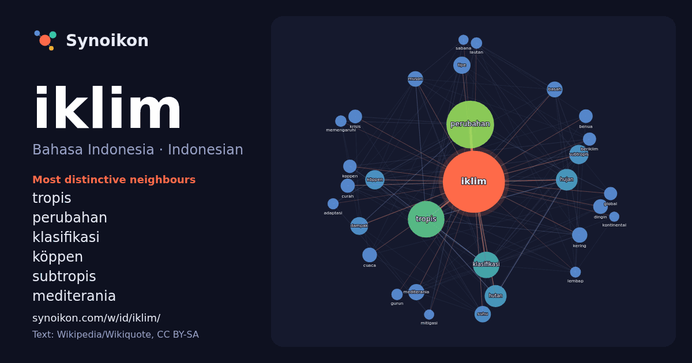

Bahasa Indonesia · Indonesian · popular word
iklim
“climate” · The words found around it in 1241 instances from Indonesian Wikipedia, Wikiquote.

Most distinctive neighbours
- tropis 130×
- perubahan 99×
- klasifikasi 77×
- köppen 51×
- subtropis 50×
- mediterania 36×
- muson 34×
- hujan 33×
- dampak 30×
- basah 30×
- hutan 27×
- koppen 26×
- beriklim 23×
- cuaca 23×
- tipe 23×
- kering 23×
- curah 22×
- benua 21×
- suhu 21×
- krisis 21×
× = how many times more often than in general Indonesian Wikipedia text.
Most frequent neighbours
- perubahan 330
- tropis 195
- memiliki 125
- klasifikasi 102
- wilayah 80
- hutan 70
- hujan 68
- köppen 54
- subtropis 54
- eropa 51
- berdasarkan 46
- dampak 46
- tipe 43
- daerah 42
- kabupaten 42
- musim 39
- suhu 39
- mediterania 38
- laut 37
- basah 36
In context
- lintangnya, iklim di permukaan Bumi dapat dibedakan menjadi iklim kutub, iklim sedang, iklim subtropis, iklim tropis, dan iklim khatulistiwa. Iklim juga dapat Wikipedia snippets · Iklim
- Perubahan iklim di masa kini adalah perubahan jangka panjang dalam suhu dan pola cuaca iklim dalam periode waktu yang sangat lama, yang mencakup peningkatan Wikipedia snippets · Perubahan iklim
- Iklim Indonesia secara keseluruhan adalah iklim tropis. Perairan yang hangat di wilayah Indonesia sangat berperan dalam menjaga suhu di darat tetap konstan Wikipedia snippets · Iklim Indonesia
- Klasifikasi iklim Köppen adalah salah satu sistem klasifikasi iklim yang paling banyak digunakan secara luas. Sistem ini dikembangkan oleh Wladimir Köppen Wikipedia snippets · Klasifikasi iklim Köppen
- dan sebaliknya pada musim panas. Iklim Jepang terbagi atas enam zona iklim: Hokkaido: Kawasan paling utara beriklim sedang dengan musim dingin yang panjang Wikipedia snippets · Jepang
- Dalam ilmu geografi, iklim sedang Bumi terletak di daerah lintang tengah (kira-kira antara 23,5° hingga 66,5° LU/LS) yang berada di antara tropika dan Wikipedia snippets · Iklim sedang
- Perubahan iklim dan gender merupakan cara untuk menganalisis dampak perubahan iklim berdasarkan gender. Perubahan iklim beserta kebijakan dan strategi Wikipedia snippets · Perubahan iklim dan gender
- Iklim lautan (juga dikenal sebagai iklim pantai barat laut, iklim maritim, iklim Cascadia dan iklim Inggris untuk Cfb, dan tanah tinggi subtropis untuk Wikipedia snippets · Iklim lautan
More Indonesian words
- air
- anjing
- bahasa
- emas
- jantung
- jembatan
- kebenaran
- kehidupan
- kekuasaan
- keluarga
- kematian
- kereta
- kerja
- kesehatan
- kesenian
- kucing
- lingkungan
- makanan
- sains
- sejarah
- tuhan
- uang
Precomputed on 2026-10-09 with default settings (±5 words, medium corpus). The interactive map can refresh it with live data.